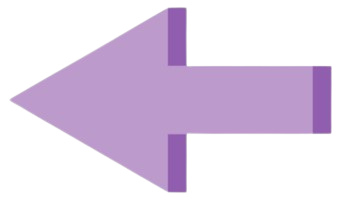

<div id="fondo">
	<app-header-v></app-header-v>
	<div class="Turn">
		<p class="">Solicitudes de Turno(0)</p>
	</div>
	<div class="TurnsAndCalendar">

<div id="Calendario" class="wrapper-calendar">
	<div class="header-calendar">
		<div>
		
			<a (click)="changeMonth(-1)" ></a>
		</div>
		<h1>{{dateSelect | date:'MMMM, yyyy'}}</h1>
		<div>

			<a (click)="changeMonth(1)">  </a>
		
		</div>
	</div>
	<ol>
		<li *ngFor="let day of week" class="day-name">{{day | slice:0:3}}<!--te permite seleccionar los 3 primeros caracteres de la semana --></li>

		<!--para establecer cuando empieza a generar los dias y no los ponga en cualquier lado -->
    <li (click)="clickDay(day)" [style.gridColumnStart]="first ? day?.indexWeek : 'auto'"
         *ngFor="let day of monthSelect;let first = first">
			<div id="boxes"><span >{{day?.value}}</span></div>
		</li>
	</ol>
</div>


<div class="FutureTurns">

	<p class="TitleTurns">Turnos:</p>
	<li class="ForFutureTurns" *ngFor="let turno of TurnPacient">
		<a class="TextFutureTurn">
		Turno de {{ turno.nombre }}
		el dia {{ turno.fecha }}
		a las {{ turno.hora }}</a>
	  </li>

</div>

</div>
<app-footer-v></app-footer-v>
</div>